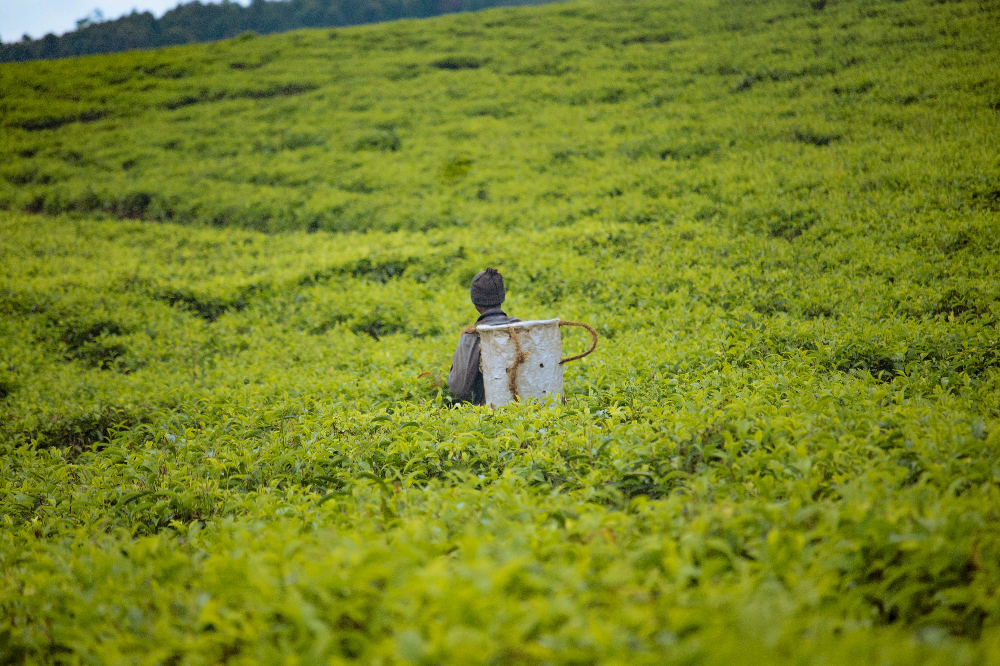
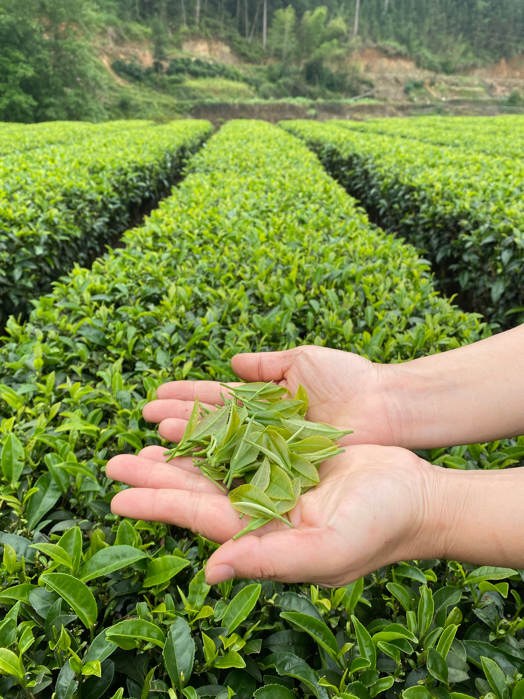
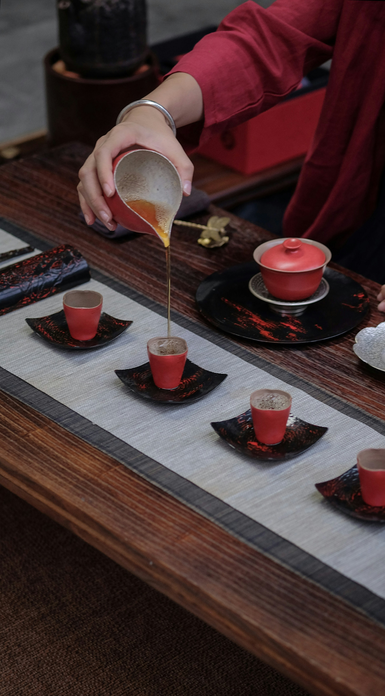
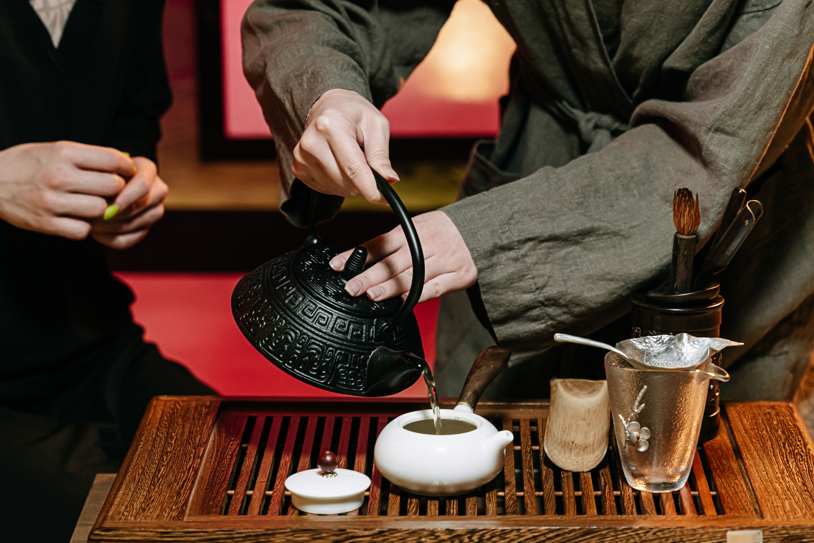

Té verde
Se procesa para evitar una oxidación significativa. Puede ofrecer notas vegetales, frescas y delicadas.
Una pausa en el camino
Historias que se infusionan, culturas que se encuentran y pequeños rituales para disfrutar sin apuro.
Comenzar el recorridoMás que una bebida
El té acompaña a distintas sociedades desde hace siglos. Su aroma y su sabor forman parte de encuentros, tradiciones y momentos cotidianos en todo el mundo.
Este espacio propone un recorrido por sus orígenes, sus variedades, las culturas que lo hicieron propio y las distintas maneras de prepararlo y disfrutarlo.
Escribí una palabra para buscarla en el sitio.
01 · Los orígenes
Del antiguo Oriente a las mesas de todo el mundo.
El origen del té se sitúa en China. Una antigua leyenda atribuye su descubrimiento al emperador Shen Nong, aunque no existe evidencia histórica que permita confirmar ese relato. Con el paso del tiempo, el consumo de té se integró a la vida cotidiana y cultural de distintas regiones chinas.
Su circulación por rutas comerciales favoreció su llegada a otros territorios de Asia y, posteriormente, a Europa. En cada lugar fue adoptado y transformado, dando origen a costumbres y formas de preparación propias.
02 · La planta
Los tés tradicionales provienen de la planta Camellia sinensis. Su procesamiento da lugar a perfiles muy diferentes.
Se procesa para evitar una oxidación significativa. Puede ofrecer notas vegetales, frescas y delicadas.
Presenta una oxidación elevada y suele desarrollar un sabor intenso, con aromas maltosos o frutales.
Se elabora con brotes y hojas jóvenes. Su procesamiento suele ser mínimo y su perfil, sutil.
Su grado de oxidación se encuentra entre el té verde y el negro. Puede tener notas florales o tostadas.
Originario de China, puede atravesar procesos de fermentación y añejamiento que aportan sabores profundos.
Nota: las infusiones de hierbas, frutas o flores no provienen necesariamente de Camellia sinensis; técnicamente se conocen como tisanas.
03 · Costumbres
Una misma bebida puede expresar tradiciones muy diferentes.
La ceremonia japonesa del té se centra especialmente en la preparación y el servicio del matcha. Sus gestos y utensilios expresan atención, respeto y armonía.
Esta forma tradicional de preparar té presta atención a la cantidad de hojas, la temperatura del agua y las infusiones sucesivas para apreciar sus matices.
La hora del té se convirtió en una costumbre social que suele acompañarse con pequeños bocados dulces o salados y un momento de conversación.
04 · Geografía del té
El clima, la altitud, las lluvias y el suelo influyen en el desarrollo de la planta y en las características de las hojas.
Gran diversidad de tés verdes, blancos, negros, oolong y pu-erh.
Regiones reconocidas como Assam y Darjeeling.
Tradición destacada en tés verdes como sencha y matcha.
Conocido internacionalmente por el té de Ceilán.
La producción se concentra principalmente en Misiones y Corrientes.
05 · Mezclas
Un blend combina distintos tés o suma ingredientes como frutas, flores y especias.
Té negro aromatizado con bergamota, una fruta cítrica de aroma característico.
Preparación de origen indio que combina té negro con especias como canela, cardamomo y jengibre.
Combinaciones que pueden incluir jazmín, rosas o lavanda para aportar aromas delicados.
06 · En casa
Pequeños detalles ayudan a disfrutar mejor cada variedad.
Seleccioná las hojas o la mezcla que quieras preparar.
La temperatura adecuada depende de la variedad elegida.
Usá la cantidad recomendada para la taza o tetera.
Controlá el tiempo para evitar sabores demasiado intensos o amargos.
Retirá las hojas y descubrí los aromas de tu preparación.
07 · Una pausa
“A veces, todo lo que necesitamos es agua caliente, hojas de té y un momento para nosotros.”
El té puede formar parte de una rutina de descanso y encuentro. Algunas variedades contienen cafeína; su cantidad depende del tipo de té y de cómo se prepare. Disfrutarlo también es una forma de conectar con pequeños momentos cotidianos.
08 · Inspiración
Colores, texturas y elementos que forman parte de este universo.




09 · Sigamos conversando
Dejanos un mensaje, una consulta o una sugerencia para seguir explorando este mundo.
Este formulario es demostrativo: valida los datos y muestra una confirmación en pantalla, pero no envía correos.